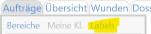

Cockpit
Support 05574 22547 Fernwartung starten
ab 2024 transdok MOBIL für ALLE
- Es gibt keine Lizenzbeschränkung mehr für transdok mobil. Jede*r kann die App fürs Handy jetzt nutzen. Ein Blick in die Hilfe und loslegen …
letzte Neuerungen
Bei Bestellung eines Rollstuhls als ÖGK-Artikel gibt es jetzt eine Eingabemaske zur Erfassung von Zusatzinformationen (Rollstuhlanpassungsbogen)
Es gibt eine Beschreibung Berichte mit Formular mit Hinweisen zum Formular
Palliatives Assessment.Im Wundformular war die Einheit der Wundtiefe bisher Millimeter. Die Einheit bei Wundlänge, -breite und Fläche ist Zentimeter. Daher bekommt jetzt auch die Wundtiefe neu die Einheit Zentimeter.
transdok kann jetzt ÖGK-Bestellungen direkt versenden. Wenn eine neue Bestellung erfasst wurde, befindet sich rechts eine Schaltfläche: Wird diese Schaltfläche geklickt, sendet transdok die Bestellung direkt an die ÖGK. Diese Bestellung ist dann nicht mehr bei “Bereitstellen” zu finden, weil dieser Schritt und auch das Senden über das GNV-Programm, nicht mehr notwendig sind. Damit kann das Senden von jedem Computer aus erfolgen - unabhängig vom GNV-Programm.
Die Auswahlliste für Klienten kann jetzt nach
Labelsangezeigt werden. Es kann ein Label oder nacheinander eine Kombination von Labels zum Filtern der Liste gewählt werden.

Neue Labels werden beiEinstellungen>Labels>Klientendefiniert und bei den Stammdaten (RegisterLabels) zugeordnet.Beim Abzeichnen von Durchführungsnachweisen kann die Tastenkombination Alt+z hilfreich sein. Sie setzt den Cursor automatisch in das Suchfeld zusätzliche Maßnahme dokumentieren, womit direkt die gesuchte Maßnahme getippt werden kann.
schon gesehen?
- Beim Dokumentieren der Tätigkeiten gibt es eine kleine Veränderung und Erweiterung. Die neue Funktion ist beim überarbeiteten Hilfe-Thema Durchführungsnachweis beschrieben.
- Benutzer können sich Notizen schreiben. Ein farblicher Punkt beim Menüpunkt
Notizenweist auf eine neue Nachricht hin. - transdok mobil, unsere App fürs Handy wird hier in einem Video präsentiert und kann sehr einfach ausprobiert werden.
- Beim Bericht schreiben gibt es eine Schaltfläche Formular hinzufügen. Hier stehen jetzt neue Formulare zur Verfügung, die je nach Bedarf verwendet werden können: Palliatives Assessment, Biografie, Psychocheck, Braden Dekubitusrisikoeinschätzung, …
- Unserer Handy-App kann jetzt Bilder hochladen, womit diese vom Handy direkt in der Dokumentation des Klienten landen. Weiters kann die App jetzt auch auf IPhones verwendet werden! Einfach ausprobieren.
- Es gibt bei der Arbeitsteilung neue Möglichkeiten: Reihenfolge und Bemerkung und Notizen hinzufügen
- Neben der Möglichkeit Berichte zu markieren gibt es jetzt auch Labels für Berichte.
- Für die Wunddokumentation gibt es im Programmbereich
Pflegeden neuen MenüpunktWunden. Hier werden die aktuellen Wunden zu einer Person angezeigt. Weiters bietet diese Ansicht eine direkte Erfassung von neuen Wunden oder neuen Bewertungen zu einer Wunde, ohne den Umweg über einen Pflegebericht. Die Anleitung Wunddokumentation wurde entsprechend überarbeitet.
Links
- Freigabe der Pflegebeiträge für die transdok-Vereinsverwaltung hier weiterlesen …
- Vorgehen bei Betreuungsbeginn hier weiterlesen …
- monatliche Meldung an connexia hier weiterlesen …
- Bei neuen MitarbeiterInnen hier weiterlesen …
- Aktueller Funktionsumfang
Infos
- Vorgehen bei Mitarbeiter-Namensänderungen: Die Änderung wird zuerst durch die Identitätsstelle (connexia) durchgeführt. Danach erfolgt beim nächsten Login eine Nachfrage, ob die Änderung korrekt ist, die mit
jabeantwortet werden kann. - Empfohlene USB-Verlängerung: Ugreen Super Speed 4 Port USB 3.0